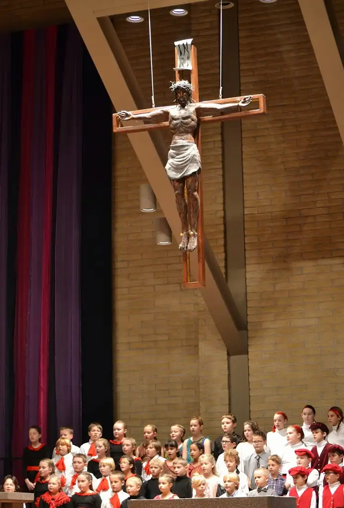

Thirteen – that’s how many years we’ve had the privilege of attending our kids’ elementary school Advent program so far. By the time our baby is past this, we’ll have 15 of them under our belt.
{kind=link}


After 13 years, you’d think it would get a bit monotonous. It doesn’t for me. Maybe it’s because my friend is the choreographer for this event, and I know how hard she works to pull it off each year.
I’ve known her for about as long as I’ve been attending the Advent program, and when I see the kids, I see her in them.

It’s not everyone who can teach creative movement to boys, nor convince kids of all stripes that it’s the coolest thing ever to dance in the school Advent program. But she manages this every year.

My first such Advent program elicited tears of amazement and joy. I managed to pull it together this year, but the evocative movements of small people reaching to God still tugged at me.
These Advent events begin with and flow around a story — the one leading to the climax of the greatest event in history, when God broke through the barrier between heaven and earth and presented himself to us as a small baby.

Why? So we would not be afraid to approach. He still beckons us, hoping with an unending hope that nothing will come between us and our thirst for what he has to offer.
Earlier this week, I was challenged to think of what the world might have been like before all that happened. But it’s hard to conceive a world before and without Jesus; a world before hope, in its fullest sense, became a possibility. And yet we so easily forget what a remarkable thing this was, and still is.
When I watch the children reaching, I see it as a yearning for the only one who can truly satisfy our souls.

But still, we must wait for the very best part of all, when we are fully with him. In the waiting, we are reaching, and it is a beautiful thing — like the sunflower reaching for the warmth of the sun so it might prosper rather than wilt and fade.
I’ve been reminded this week that waiting is not a passive thing; that though Advent is a time of waiting, it is not a time of being inactive.

{kind=link}

On Facebook the other day, I asked my friends to describe Advent in one word. Just one friend asked to use two, and I gave her the pass. I was delighted at what came forth, and amazingly, there were few repeats. I hope they evoke for you feelings and images of active pause as they have done for me.
If you have a different one to share, please do in the comments box!